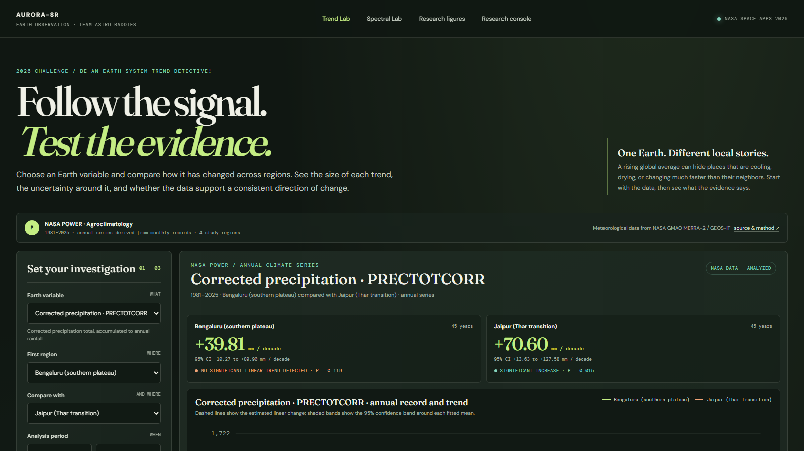
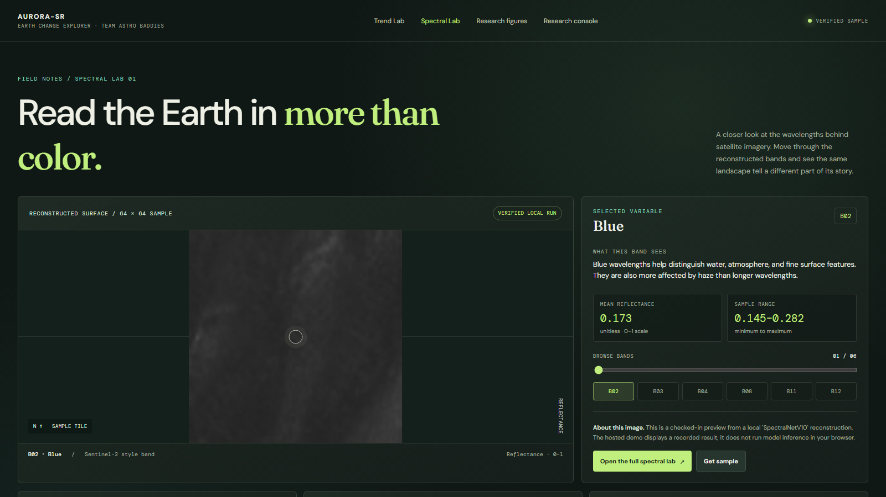
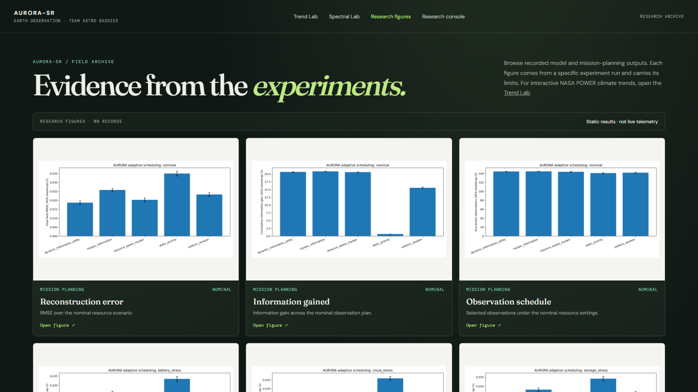

An Earth-system trend tool grounded in NASA POWER climate data, alongside research models for spectral reconstruction and drought analysis.
Select one of six NASA POWER variables, compare two Indian grid points, and choose years from 1981 to 2025.

SpectralNetV10 is trained to estimate six Sentinel-2-style bands from RGB imagery. Temporal drought research combines spectral and physics-derived surface features with NASA POWER climate history.

AURORA-SR brings NASA POWER climate history, Sentinel-2 surface signals, spectral reconstruction, and drought-model research into one accessible project.
